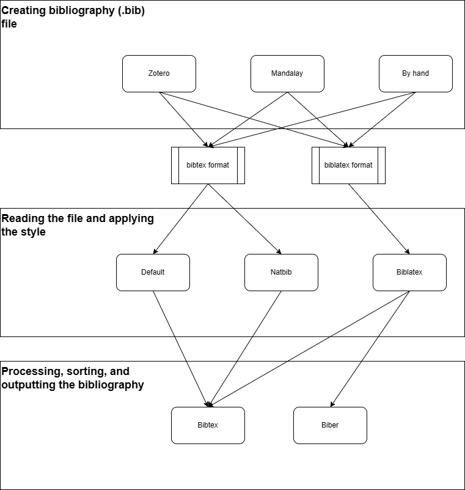

Document structure¶
The document structure is well documented on wikibooks. The basic structure is:
\documentclass[<options>]{<class>}
...
\begin{document}
...
\end{document}
Lot of content is usually put in the preamble, i.e., between the \documentclass and \begin{document} commands. The preamble usual content is:
- loading packages with \usepackage{<package>}
- providing new commands or redefining existing commands
- configuring packages
- supplying metadata for the document (title, author, etc.)
Title page¶
The title page typically contains the title, authors, and potentially other metadata like date or keywords. The standard way how to create the title page is to first define the metadata and then use the \maketitle command. To print the whole title page. The metadata available for standard article class:
- \title{<title>}
- \author{<author>}
- \date{<date>}. \today can be used to print the current date. This is the default value if we omit the \date command.
A special non-numbered footnote can be added to most fields using the \thanks{<text>} command.
Authors specification¶
By default, all authors should be filled within a single \author command, separated by the \and command. If we need to specify the affiliations, we can do it inside the \author command. This way, each author have the affiliation printed right after/bellow the author name.
However, if there are many authors with shared affiliations, this approach is unsustainable. Instead, we can use the authblk package which lets us specify the authors and affiliations separately and connect them to authors using footnotes. Example:
\usepackage{authblk}
\author[1]{Author 1}
\author[2]{Author 2}
\author[1]{Author 3}
\affil[1]{Affiliation 1}
\affil[2]{Affiliation 2}
Keywords¶
Keywords are not part of the standard article class. If we need to include them when using the standard article class, we can provide the command ourselves. Example:
\providecommand{\keywords}[1]{\textbf{\textit{Index terms---}} #1}
...
\keywords{keyword1, keyword2, ...}
Appendices¶
Appendicies are started with the command appendix. Then, each chapter started with the \chapter command is considered an appendix.
Book class structuring¶
Appart from sections and chapters, the book class also supports top level parts for marking special areas of the document. The parts are:
- \frontmatter: the front matter of the document, i.e., the title page, abstract, table of contents, etc. The page numbering is in roman numerals.
- \mainmatter: the main matter of the document, i.e., the main content. The page numbering is in arabic numerals, and the page numbering is reset to 1.
- \backmatter: the back matter of the document, i.e., the bibliography, appendices, etc. The page numbering is in arabic numerals. Chapters are not numbered.
Escape characters¶
LaTeX uses man6y special characters which needs to be escaped. Unfortunatelly, there is no single escape character, instead, there are many. The following table lists the most common escape characters:
| Character | Escape sequence |
|---|---|
[ |
{[} |
] |
{]} |
Special characters¶
Non-breaking characters¶
~: non-breaking space\nobreakdash-: non-breaking dash
Text and paragramph formatting¶
Fonts¶
Determining used font¶
To determine the font (size, type) used in a particular place put the following command there:
\showthe\font
Then compile the document. The font information will be printed in the log (e.g.: \OT1/cmr/m/n/10).
Changing font size¶
The default font size is 10pt. To change the default font size, set the documentclass option 12pt or 11pt (other sizes are not avialable). See the wiki for more information.
The size can be also changed for a specific part of the document. We can use some predefined sizes e.g.:
Normal {\tiny tiny} normal
or we can use the \fontsize command to set arbitrary size. Example:
{\fontsize{<size>}{<line spacing>}\selectfont <text>}
Font color¶
To change the font color, we need to use the xcolor package.
First, we need to define the color using the \definecolor command. Example:
\definecolor{my_color}{RGB}{255,0,0} # RGB color
\definecolor{my_color}{HTML}{FF0000} # HTML color
\definecolor{my_color}{cmyk}{0,1,1,0} # CMYK color
Then, we can use various commands to change the font color:
- \textcolor{<color>}{<text>}: change the color of the text
- {\color{<color>}<text>}: change the color of the text. Can span multiple paragraphs.
note that other commands that have color options usually depend on the xcolor package, and accept the same color definitions.
Horizontal and vertical spacing¶
Most of the time, the spacing should be handled by LaTeX automatically. However, there are cases when we need to adjust the spacing manually, either in a single place or globally.
To adjust the spacing in a single place, we can use the following commands:
- \hspace{<length>}: horizontal space
- \vspace{<length>}: vertical space
Note that we can use negative values for the <length> parameter, so we can use these commands to relatively positioning.
Horizontal and vertical alignment¶
Horizontal alignment¶
By default, the text is fully justified. To change the justification (alignment), to left or right, we can use either
- environments: flushleft for left alignment, flushright for right alignment, or
- commands: \raggedright for left alignment, \raggedleft for right alignment.
Vertical alignment¶
By default, the text starts from the top of the page. To align the text to the bottom of the page, we can use the vfill command. Example:
Some text
\vfill
Some text at the bottom
Note that the vfill works only if there is something before it, it does not work if it is the first command on the page. To make it work, we can use the null command. Example:
\null
\vfill
Some text at the bottom
Subscript and superscript¶
In math mode, the subscript and superscript are created using the _ and ^ characters. In text mode, we need to use a special commands: \textsubscript and \textsuperscript. Example:
H\textsubscript{2}O
Lists¶
The list enviroments have the following syntax:
\begin{<list type>}
\item <item 1>
\item <item 2>
...
\end{<list type>}
The following list types are available:
- itemize: bullet points
- enumerate: numbered list
- description: description list. Items can have a label, which is specified as an optional argument of the \item command.
More typoes of lists like questions or checklists can be created using external packages.
Units, numbers, and currency¶
Units are usually typeset with a small space between the number and the unit. Normal space should be avoidedas it is too wide. Also, we sometimes want a special separator in large numbers. For these purposes, the best practice is to use the siunitx package.
Eith siunitx, the units are typeset using the \SI command. Example:
\SI{10}{\meter}
The numbers should be typeset using the \num command. Example:
\num{1000000}
The currecnies that have the currency sign before the number are also typeset using the \SI command, but we need to use the optional argument for prefix:
\SI{10}[\$]{}
Supported units¶
\s: second\km: kilometer\km\per\hour: kilometer per hour\percent: percent
Boxes¶
Everythign in LaTeX is a box. Each character is a box, stored in a larger box for each word, and analogically for each line, paragraph, etc. Most of the time we just set properties for the boxes, but sometimes we need to create a box manually to format or position the content. The following table presents the most common box commands:
| Command | paragraph | witdth |
|---|---|---|
\parbox |
single | fixed |
\pbox |
single | flexible |
\minipage |
multiple | fixed |
The first two parameters are shared for these commands:
- pos: the position of the box, e.g., t for top, b for bottom, c for center. The position refers to the part of the box that is aligned with the surrounding text.
- height: the height of the box.
The parbox and minipage share another two parameters that follows:
- contentpos: the position of the content inside the box, e.g., t for top, b for bottom, c for center.
- width: the width of the box.
Make a box wider than the text width¶
To make a box wider than the text width, we can use the \adjustwidth command from the changepage package. Example:
\begin{adjustwidth}{-1cm}{-1cm}
... content
\end{adjustwidth}
The box above will be 1cm wider on each side than the text width.
Floats¶
The following environments are floats:
- figure
- table
- algorithm
Placement¶
Any float takes the position as a first argument. The following positions are available:
- h: here
- t: top
- b: bottom
- p: special dedicated page per float
- !: ignore nice positioning and put it according to the float specifiers
The placement algorithm then iterate pages starting from the page where the float is placed. For each page, it tries to find a place for the float according to the float specifiers (in the same order as they appear in the float position argument). In case of success, the procedure stops and place the float. If the procedure fails for all pages, the float is placed at the end.
Note that by specifying the float position, we only add constraints to the placement algorithm, but do not guarantee the placement. By omitting the float position, we can accually make the float appear closer to the place where it is defined.
Sources: - LaTeX Wikibook - Overleaf
Default placement¶
The default placement differs between environments and also classes. For example for article class, the default placement for figure and table is tbp (see SO).
Figures¶
The float environment for figures is figure. The image itself is included using the \includegraphics command.
The mandatory argument of the \includegraphics command is the path to the image file. This path can be relative or absolute. If the path is relative, it is relative to the location of the main .tex file. The file extension can be omitted. If the file extension is omitted, the compiler will try to find the file with various extensions. Therefore, it is only recommended to omit the file extension if there is only one file with the same name.
Subfigures¶
For more images in one float, we can use the subfigure environment from the subcaption package. The subfigure environment is used as follows:
\begin{figure}[h]
\centering
\begin{subfigure}{0.3\textwidth}
\includegraphics[width=\textwidth]{image1.png}
\caption{Image 1}
\label{fig:image1}
\end{subfigure}
\begin{subfigure}{0.3\textwidth}
\includegraphics[width=\textwidth]{image2.png}
\caption{Image 2}
\label{fig:image2}
\end{subfigure}
\caption{My figure}
\label{fig:my_figure}
\end{figure}
If the figures are not of the same height, they will be aligned at the bottom. To align them at the top, we can use the T option for the subfigure environment. Example:
\begin{subfigure}[T]{0.3\textwidth}
...
\end{subfigure}
Tables¶
The float environment for tables is table. However, the rows and columns are wrapped in another environment. The default inner enviroment is tabular, however, there are many other packages that extends the functionality. In practice, there are currently three inner environments to consider:
- tabular: the default environment that is sufficient for simple tables
- tabulary: the environment that allows to create columns with automatic width. If the main or only issue of the table is that it needs to fit a specific width, this is the environment to use.
- tblr: the tblr environment from the tabulararray package is the most up to date tabular environment that support many features. Also, it splits the table presentation from the table content, which can make generating tables from code easier. The only downside is that it does not support automatic column width.
Column types¶
The column types are specified in the argument of the tabular or equivalent environment. The following column types are available by default:
- l: left aligned
- c: centered
- r: right aligned
- p{width}: paragraph column with specified width
Other column types can be provided by the inner environment package or by the user.
Simple tables with tabular environment¶
The usual way to create a table in the tabular environment is:
\begin{table}[h]
\centering % center the content of the table environment
\begin{tabular}{|c|c|}
... rows and columns
\end{tabular}
\caption{My table}
\label{tab:my_table}
\end{table}
Columns with automatic width: tabulary¶
By default, laTeX does not support automatic width for columns, i.e., sizing the columns by their content. To enable this feature, we can use the tabulary package, which provides the tabulary environment (which is a replacement for the tabular environment). The columns with automatic width are specified by the L, C, R column types.
Note that the new column types can be combined with the standard column types. In that case, the standard columns will have width according to their content, and the rest of the space will be distributed among the new column types.
Complex tables with tabulararray package¶
The tabulararray package provides :
- full control over the table, most features among all packages
- separation of the table content and the table presentation
- simpler code for basic tasks like multirows and multicolumns, wrapping text in cells, etc.
Notable features present in the tabulararray package missing in other packages:
- footnotes in tables (otherwise, it requires a threeparttable environment wrapper)
As other tabular packages, there are some incompatibilities related to the tabulararray package. So far, I observed only incompatibilities with the tabulararray talltblr environment, not with the standard tblr environment. The following table summarizes the incompatibilities I found so far:
- cases: Obviously, the cases environment uses table components internally. When using together with talltblr, the cases environment compilation results with the following error: latex "\begin{cases}" package array empty preamble l' used. The solution is to use the use the new +cases environment provided by the tabulararray package. As a bonus, the +cases environment also fixes some visual glitches. Steps:
1. enable the +cases environment by adding \UseTblrLibrary{amsmath} to the preamble
1. replace the cases environment with the +cases environment
- tabular: yes, the talltblr environment is incompatible with the default tabular environment. The solution is simple: replace all tabular environments with tblr environments.
Styling¶
Table grid (visual lines)¶
Usually, tables contain some horizontal and vertical lines to separate the cells. Unfortunately, the way how to create these lines differs completely between horizontal and vertical lines.
Horizontal lines¶
For horizontal lines, we can:
- use various commands to create a line in a specific row:
- \hline: creates a line in the current row
- specify the lines outside the data with the tabularray package:
Specify the lines outside the data with the tabularray package¶
The format is hline{<list of rows>} = {<line style>}. Example:
\begin{tblr}{
colspec={|c|c|c|},
hline{1,Z} = {1pt, solid},
}
...
\end{tblr}
The <list of rows> can be specified as:
- single row: hline{1} = {1pt, solid}
- multiple rows: hline{1,3,5} = {1pt, solid}
- range of rows: hline{1-Z} = {1pt, solid}
Rows are numbered from 1. The Z character is used to specify the last row.
Styling the specific rows or columns¶
With the tabularray package, we can style the table header differently than the rest of the table. In fact, we can style each specific row or column differently. for that, we use the row and column keys. Example
\begin{tblr}{
colspec={|c|c|c|},
row{1} = {bg=gray9, fg=white},
column{1} = {bg=gray9, fg=white},
}
The syntax is the same for both keys: row{<row number>} = {<style>}. For the <row number> specification, see the grid section. The <style> specification is a list of key-value pairs. The keys are the following:
- font: the font style
Configure the space between columns¶
In most packages, the space between columns is configured using the \tabcolsep variable. Example:
\setlength{\tabcolsep}{10pt}
However, in the tblr environment, the space between columns is configured using the leftsep and rightsep keys. Example:,
\begin{tblr}
{
colspec={llllrr},
leftsep=2pt,
rightsep=2pt
}
By default, the leftsep and rightsep are set to 6pt.
Define table styles with tabularray package¶
The tabularray package provides a way to define table styles. First, we define the new environment with the \NewTblrEnviron command. Later, we use the SetTblrInner and SetTblrOuter commands to define the style. Example:
\NewTblrEnviron{mytblr}{
\SetTblrInner{rowsep=1pt}
\SetTblrOuter{hspan=minimal}
}
Rotated text¶
To rotate some text, we can use the \rotatebox command:
\rotatebox{90}{Rotated text}
Multirows and multicolumns¶
Depending on the inner environment, the multirows and multicolumns are created using different commands.
tabular environment¶
In the tabular environment, the multirows and multicolumns are created using the \multicolumn and \multirow commands. Example:
\begin{tabular}{cc}
\multicolumn{2}{c}{multi column} \\
\multirow{2}{*}{multi row} & 1 \\
& 2 \\
\end{tabular}
tabulararray environment¶
In the tabulararray environment, the multirows and multicolumns are created using the \SetCell command. Example:
\begin{tblr}{cc}
\SetCell[c=2]{c} multi column & \\
\SetCell[r=2]{c} multi row & 1 \\
& 2 \\
\end{tblr}
Note that for multicolumns, we need to add the column divider (&) after the \SetCell command for each column that is spanned by the multicolumn.
Export google sheets to latex tables¶
There is ann addon called LatexKit which can be used for that.
Footnotes in tables¶
In tables and table captions, the \footnote command does not work correctly. Also, it is not desirable to have the footnote at the bottom of page, instead, we want the footnote to be at the bottom of the table. To achieve this, we use a special environment:
- threeparttable: if we are using the tabular or tabulary environment
- talltblr: if we are using the tblr environment
Using the threeparttable¶
The threeparttable environment is used as follows:
\begin{table}[h]
\centering
\caption{My table}
\label{tab:my_table}
\begin{threeparttable}
\begin{tabular}{|c|c|}
one$^a$ & two$^b$ \\
... other rows and columns
\end{tabular}
\begin{tablenotes}
\item $^a$footnote 1
\item $^b$footnote 2
\end{tablenotes}
\end{threeparttable}
\end{table}
Using the talltblr¶
The talltblr environment is used as follows:
\begin{table}[h]
\centering
\caption{My table}
\label{tab:my_table}
\begin{talltblr}[
label = none,
note{a} = {footnote 1},
note{b} = {footnote 2}
]{
colspec={|c|c|},
}
one\TblrNote{a} & two\TblrNote{b} \\
... other rows and columns
\end{talltblr}
\end{table}
Notice the label = none option. Without it, the table numbering is raised again, resulting in the table being numbered twice.
Rotated text¶
To rotate some text, we can use the \rotatebox command:
\rotatebox{90}{Rotated text}
Algorithms¶
wiki
There are two types of enviroments for, depending on the purpose:
- algorithm: for pseudocode
- lstlisting: for code in a specific language
Pseudocode¶
The floating environment for pseudocode is algorithm. It is an equivalent of the table environment for tables. Same as with tables, there is also an inner environment for the pseudocode. The options for the inner environment are:
- algorithmic: basic environment for pseudocode
- algorithmicx: extension of the algorithmic environment, supports custom keywords
- algorithm2e:
- algpseudocodex: extension of the algorithmicx package, various improvements
- pseudo: a package for writing pseudocode directly, not using any special commands
Their properties are summarized in the following table:
| Environment | Package | Updated | Custom keywords |
|--- | --- | --- | --- |
| algorithmic | algorithms | 2009 | no |
| algorithmicx | algorithmicx | 2005 | yes |
| algorithm2e | algorithm2e | 2017 | yes |
| algpseudocodex | algpseudocodex | 2023 | yes |
| program | program | 2017 | no |
| pseudo | pseudo | 2023 | yes |
If the algorithm requires a complex description and cannot be expressed using typical pseudocode, we can resort to using human language directly in the algorithm environment. There is such example at SO
Algoritmicx and Algpseudocodex¶
Normal code lines are written using the \State command:
\State $x \gets 0$
Conditions¶
Conditions are written using the \If, \ElseIf, and \Else commands. Example:
\If{$x < 0$}
\State $x \gets 0$
\ElsIf{$x > 100$}
\State $x \gets 100$
\Else
\State $x \gets x$
\EndIf
Loops¶
For loop:
\For{$ i = 1, \dots, n $}
...
\EndFor
Boolean operators¶
Boolean operators are not defined by default. Either use plain text, or define them (see the Additional keywords section below).
Additional keywords¶
We can define additional keywords using the \algnonewcommand command. The format is \algnonewcommand<custom command>{<keyword>}. Example:
\algnewcommand\Not{\textbf{not}}
Empty lines¶
To add an empty line, use the \State command without any argument.
If the numbering is on and we want to skip the numbering for the empty line, we can use the \Statex command.
Functions and procedures¶
Functions and procedures are defined using the \Function and \Procedure commands. Example:
\Function{my_function}{a, b}
\State $x \gets a + b$
\State \Return $x$
\EndFunction
We can call the function or procedure using the \Call command. Example:
\Call{my_function}{1, 2}
Line numbering¶
To add line numbering, add an optional argument to the algorithmic environment. The argument is the number determining the frequency of the line numbering. Example:
\begin{algorithmic}[3] % number every 3rd line
...
\end{algorithmic}
Centering of floats wider than text width¶
If the float is wider than the text width, it is not centered, but instead it is left-aligned with the text and it overflows on the right side. To fix this, we can wrap the too-wide float content in the \makebox command. Example:
\begin{figure}[h]
\makebox[\textwidth]{
\includegraphics[width=1.2\textwidth]{my_image.png}
}
\caption{My figure}
\label{fig:my_figure}
\end{figure}
Boxes¶
Everythign in LaTeX is a box. Each character is a box, stored in a larger box for each word, and analogically for each line, paragraph, etc. Most of the time we just set properties for the boxes, but sometimes we need to create a box manually to format or position the content. The following table presents the most common box commands:
| Command | paragraph | witdth |
|---|---|---|
\parbox |
single | fixed |
\pbox |
single | flexible |
\minipage |
multiple | fixed |
The first two parameters are shared for these commands:
- pos: the position of the box, e.g., t for top, b for bottom, c for center. The position refers to the part of the box that is aligned with the surrounding text.
- height: the height of the box.
The parbox and minipage share another two parameters that follows:
- contentpos: the position of the content inside the box, e.g., t for top, b for bottom, c for center.
- width: the width of the box.
Make a box wider than the text width¶
To make a box wider than the text width, we can use the \adjustwidth command from the changepage package. Example:
\begin{adjustwidth}{-1cm}{-1cm}
... content
\end{adjustwidth}
The box above will be 1cm wider on each side than the text width.
Math¶
To use math, we need the amsmath package.
The math commands only works in math mode which can be entered in one of the many math environments.
Common math constructs¶
The following table lists the most common math constructs:
- fractions: \frac{<numerator>}{<denominator>}
- binomial coefficients: \binom{n}{k}
Subscript and superscript¶
Subscript and superscript are created using the _ and ^ characters. If the subscript or superscript is longer than one character, we need to wrap it in curly braces.
There are aslo some special characters that result in superscript:
- ': prime
- *: star
However, these characters alone works only in normal math text. If we want to use them in a subscript or superscript, we need to use the ^ and _ characters. Example:
x* % correct print
a_{x*} % inccorrect print - the star is not in superscript
a_{x^*} % correct print
If/else variants¶
For that, we use the cases environment. Example:
\begin{equation}
f(x) =
\begin{cases}
0 & \quad \text{if } x < 0 \\
1 & \quad \text{if } x \geq 0
\end{cases}
\end{equation}
Equations and similar environments¶
The following environments are available for equations:
- equation: for single equations
- align: for multiple equations aligned at a specific character
- alignat: for multiple equations aligned at multiple characters
- aligned: for multiple equations inside another math environment (e.g., equation)
- gather: for multiple equations not aligned, each line numbered separately
The new line is created using the \\ command. Nothe that the \\ command is not allowed in the equation environment.
To align the equations in the align and alignat environments, we use the & character.
Problem and similar environments¶
The environments for special math text blocks are not included in the amsmath package. We can define them manually using the \newtheorem command. Example:
\newtheorem{problem}{Problem}
\begin{problem}
This is a problem.
\end{problem}
Here, the first argument of the \newtheorem command is the name of the environment, and the second argument is the name of the environment in the output. There can be also an optional third argument, which is the name of the counter that is used for numbering the environment. For example, if we want to use another environment for propositions with the same numbering as the problems, we can use the following command:
\newtheorem{proposition}[problem]{Proposition}
Some environments are already defined in the amsthm package, e.g., proof.
Common environments names and their meaning¶
theorem: a statement to be provedlemma: a minor theorem, with a limited applicability outside the context of the main theoremcorollary: a theorem that follows directly from another theoremproposition: a less important theorem, usually used for something elementary, obvious, so that it does not require a proofpremise: a statement that is assumed to be true and it represents a fact that is used in the proof of the theorem. For example: "We only consider sets where half of the numbers are even..."assumption: a statement that is assumed to be true and it represents a condition under which the theorem is true. For example: "Assuming half of the numbers in the set are even..."
More can be fount on proofwiki
Math fonts¶
the default math font is typed as common math italic. To use a different font, we need to use special commands:
- \mathrm{}: for normal font in math mode, e.g., for multi-letter subscripts and superscripts
- \mathbb{}: for blackboard bold font, e.g., for special sets (R, N, ...). This font requires the amsfonts package.
Bold math font¶
To use a bold font, we can use the \bm command from the bm package:
\usepackage{bm}
\begin{equation}
\bm{a} = \bm{b} + \bm{c}
\end{equation}
Correct size of braces¶
To size any type of braces correctly, if the content is larger than the braces, we can use the \left and \right commands. Example:
\left( \frac{a}{b} \right)
Links¶
For links, we need the hyperref package. Typical usage:
\url{https://www.google.com}
\href{https://www.google.com}{Google}
Footnotes¶
The footnote is created using the \footnote{} command.
Override footnote numbering¶
To override the footnote numbering (e.g. to repeat the same number twice), we can use the \setcounter command. Example:
\setcounter{footnote}{1} # set the footnote counter to 1
Disallow footnote splitting¶
To disallow footnote splitting, we can increase the \interfootnotelinepenalty command. Example:
\interfootnotelinepenalty=10000
Bibliography¶
See more on SE.
For bibliography management, whole toolchain is usually needed, including: - a tool that generates the bibliography file (e.g. Zotero, Mendeley, ...) - a latex package that cares about the citations style (e.g. biblatex, natbib, or default style) - the real bibliography processer that generates and sorts the bibliography (e.g. bibtex, biber, ...)
However, not all combinations of theses tools are possible. For understanding the pipeline and the possible combinations, see the following figure:

When choosing what package to use in latex, we have to take care that we:
- have the bibliography file in the right format (.bib for all pipelines, but the content differs)
- have the style in the right format (.bst for default or natbib, .bbx for biblatex)
By default, we should use the biblatex - Biber pipeline. Howevver, there are some circumstances where we need to use bibtex, for example, if we need to use a style that is not available for biblatex (as there is no conversion tool). The styles available for biblatex are listed on CTAN.
Latex document configuration¶
Biblatex styling¶
Basic setup:
\usepackage[style=numeric]{biblatex}
...
\addbibresource{bibliography.bib}
...
\printbibliography
The style parameter is optional. The styles available for biblatex are listed on CTAN.
Handle overflowing URLs in bibliography¶
Sometimes, the links overflow the bibliography. To fix this, we can use the following commands:
\setcounter{biburllcpenalty}{100}
\setcounter{biburlucpenalty}{100}
\setcounter{biburlnumpenalty}{100}
\biburlnumskip=0mu plus 1mu\relax
\biburlucskip=0mu plus 1mu\relax
\biburllcskip=0mu plus 1mu\relax
Default and natbib styling¶
Basic setup:
\bibliographystyle{plain}
...
\bibliography{bibliography}
Note that we do not have to use any package to use basic cite commands. Also note, that the \bibliographystyle command is mandatory. Finally, we do not need to specify the extension of the bibliography file.
Natbib¶
The bibtex bibliography management system is quite old and does not support many features. To overcome this, we can use the natbib package:
\usepackage{natbib}
Commands for citing¶
There are multiple commands for citing, each resulting in a different output. The two most important variants are in-text citation and parenthetical citation: - In-text citation: the citation is part of the text. - IEEE: this was proven by Smith et al. [1] - APA: this was proven by Smith et al., 2019 - Parenthetical citation: the citation is not part of the text. - IEEE: this has been proven before [1] - APA: this has been proven before (Smith et al., 2019)
Unfortunately, the commands for these two variants are not consistent across the bibliography packages. The following table summarizes the commands for the two variants:
| Package | In-text citation | Parenthetical citation | Full citation |
| --- | --- | --- | --- |
| Biblatex | \textcite{<key>} | \cite{<key>} | \fullcite{<key>} |
| Natbib | \cite{<key>} | \citep{<key>} | \bibentry{<key>} (requires the bibentry package) |
There are more citation commands resulting in different styles for each bibliography styling package, and each of these packages can be also configurated for even more customized look. For more information, see the following links: - Natbib styles
Bibliography entries¶
There are many types of bibliography entries, each of them with different fields. to make things even more complicated, these entries does not match the entry types in Zotero. To make it easier, many use-cases are covered in the table below:
| Use-case | Biblatex | Zotero |
|---|---|---|
| Book | @book |
Book |
| Book chapter | @incollection |
Book Section |
| Conference paper | @inproceedings |
Conference Paper |
| Journal article | @article |
Journal Article |
| Report | @report |
Report |
| Thesis | @thesis |
Thesis |
| Web page | @online |
Web Page |
| Legal document | @legal |
Unavailable. Use Report instead. |
Other sources: - Biblatex documentation - Zotero documentation - Zotero legal types
Custom commands¶
Basic syntax for defining a new command is:
\newcommand{\<command name>}[<number of arguments>]{<command definition>}
The number of arguments is optional. If it is not specified, the command does not take any arguments.
The command is then used as follows:
\<command name>{<argument 1>}{<argument 2>}...{<argument n>}
Providing default values for arguments¶
Latex support default values for the first argument. The syntax is:
\newcommand{\<command name>}[<number of arguments>][<default value>]{<command definition>}
The command can than be used both with and without the optional argument:
\newcommand{\mycommand}[2][0]{...}
\mycommand{<argument 2>}
\mycommand[<argument 1>]{<argument 2>}
Note that that if we want to supply the optional argument, we use the square brackets.
For two optional arguments, we have to use the twoopt package. Example:
\usepackage{twoopt}
...
\newcommandtwoopt{\mycommand}[2][default1][default2]{...}
Here again, both optioanl arguments, if supplied, must be supplied in the square brackets.
Splitting the document into multiple files¶
There are two ways to split the document into multiple files:
- \input{file}
- \include{file}
The \include is intended for chapters or other large parts of the document. It has the following properties:
- it starts a new page before and after the included file
- it does not allow nesting
- there is a special command \includeonly{file1,file2,...} which allows to include only the specified files. This is useful for large documents where we want to compile only a part of the document. Without this command we would need to search for the include command and comment it out.
The \input command is intended for smaller parts of the document. Contrary to the \include command, there is no special behavior involved. Instead, the content of the file is simply pasted at the place of the \input command.
Speedup Techniques¶
The compilation of large documents can be slow. There are several techniques to speed up the compilation:
- split the document into multiple files and use \includeonly to include only the relevant files
- precompiling the preamble
- using draft mode
Precompiling the preamble¶
The preamble is the part of the document before the \begin{document} command. It contains the document configuration, packages, etc. Because the included packages are usually large, the compilation of the preamble can be slow. To speed up the compilation, we can precompile the preamble and use the precompiled preamble in the main document. This can be done using the mylatexformat package. The usage is as follows:
- At the beginning of the preamble, add the following comment:
%&<format name>. This will tell the compiler to use the specified format. The<format name>can be arbitrary, but it is recommended to use the same name as the main document. - To spare some preamble content from being precompiled (dynamic content), add a command
\endofdumpafter the content that should not be precompiled. - run the following command:
PowerShell pdflatex --ini -jobname="<format name>" "&pdflatex" mylatexformat.ltx <format name>.tex
Afther this, the compilation of the main document should be faster. For more information, see the package documentation or the SO question.
Miscelaneous tasks¶
Balancing columns in two-column documents¶
To balance the columns at the end of the document, we can use the flushend package. Just add \usepackage{flushend} to the preamble.
Common problems¶
Ugly font in pdf¶
This can be cause by the missing vector fonts. If the vector fonts are missing, the bitmap fonts are used instead. 1. To check if this is the cause, zoom in on the pdf. If the text is blurry, the bitmap fonts are used. 1. To fix this, install the vector fonts. - On Windows, install the cm-super package through MikTeX.